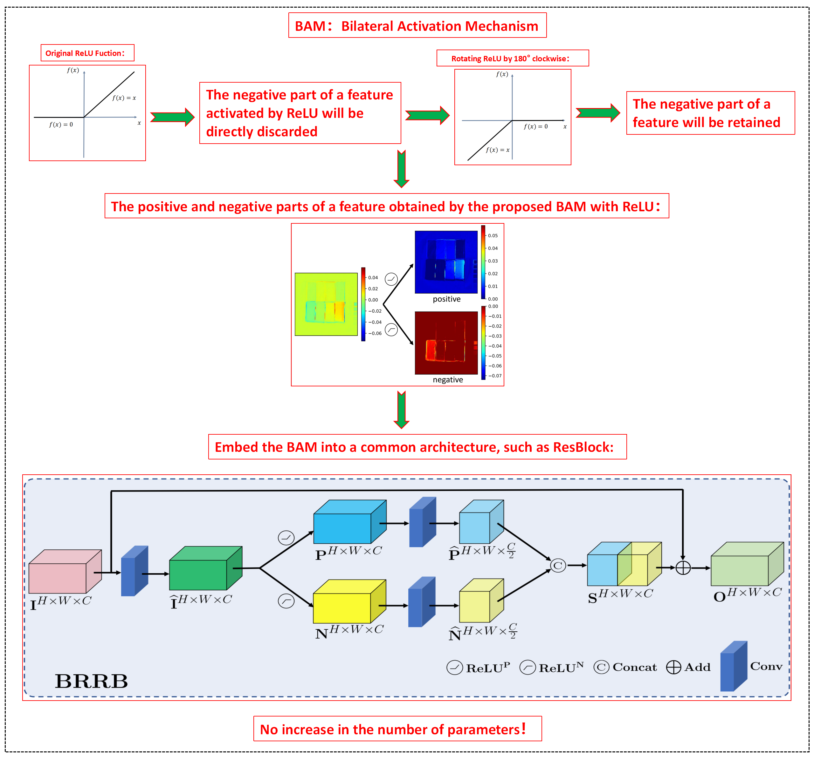

BAM: Bilateral Activation Mechanism for Image Fusion
Zi-Rong Jin, Liang-Jian Deng*, Tian-Jing Zhang, Xiaoxu Jin
Abstract
As the conventional activation functions such as ReLU, LeakyReLU, and PReLU, the negative parts in feature maps are simply truncated or linearized, which may result in unflexible structure and undesired information distortion. In this paper, we propose a simple but effective Bilateral Activation Mechanism (BAM) which could be applied to the activation function to offer an efficient feature extraction model. Based on BAM, the Bilateral ReLU Residual Block (BRRB) that still sufficiently keeps the nonlinear characteristic of ReLU is constructed to separate the feature maps into two parts, i.e., the positive and negative components, then adaptively represent and extract the features by two independent convolution layers. Besides, our mechanism will not increase any extra parameters or computational burden in the network. We finally embed the BRRB into a basic ResNet architecture, called BRResNet, it is easy to obtain state-of-the-art performance in two image fusion tasks, i.e., pansharpening and hyperspectral image super-resolution (HISR). Additionally, deeper analysis and ablation study demonstrate the effectiveness of BAM, the lightweight property of the network, etc.
The flowchart of BAM

Results

Bib Citation
@ARTICLE{BAM,
author={Zi-Rong Jin , Liang-Jian Deng, Tian-Jing Zhang, Xiaoxu Jin},
journal={Proceedings of the 29th ACM International Conference on Multimedia},
title={BAM: Bilateral Activation Mechanism for Image Fusion},
year={2021},
volume={},
number={},
pages={DOI: 10.1145/3474085.3475571},
}